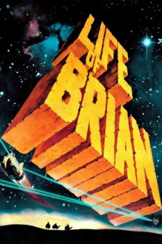

Country:United Kingdom, 94 minutes
Spoken languages:English, Latin
Genres:Comedy
Director(s):Terry Jones
Writer(s):Terry Gilliam, John Cleese, Terry Jones, Graham Chapman, Eric Idle
Video Codec:Unknown
Number: 6319

Certification:R
Storyline:
Brian Cohen is an average young Jewish man, but through a series of ridiculous events, he gains a reputation as the Messiah. When he's not dodging his followers or being scolded by his shrill mother, the hapless Brian has to contend with the pompous Pontius Pilate and acronym-obsessed members of a separatist movement. Rife with Monty Python's signature absurdity, the tale finds Brian's life paralleling Biblical lore, albeit with many more laughs.
Cast:
Graham Chapman (as Wise Man #2 / Brian Cohen / Biggus Dickus), John Cleese (as Wise Man #1 / Reg / Jewish Official / First Centurion / Deadly Dirk / Arthur), Terry Gilliam (as Man Even Further Forward / Revolutionary / Jailer / Blood and Thunder Prophet / Frank / Audience Member / Crucifee), Eric Idle (as Mr. Cheeky / Stan 'Loretta' / Harry the Haggler / Culprit Woman / Warris / Intensely Dull Youth / Jailer's Assistant / Otto / Lead Singer Crucifee), Terry Jones (as Mandy Cohen / Colin / Simon the Holy Man / Bob Hoskins / Saintly Passer-by / Alarmed Crucifixion Assistant)
Medium: Media file,
Location: D:\Monty Python Life Of Brian\Life Of Brian - Monty Python.mp4
Loaned: No
Aspect ratio: Unknown